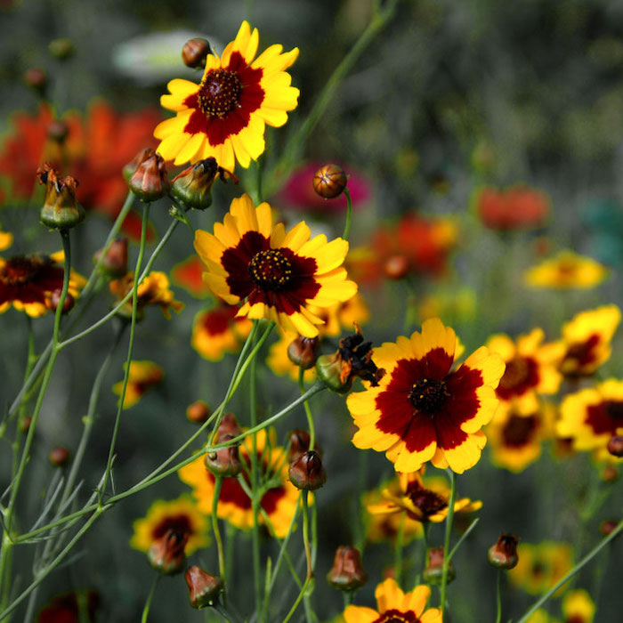

Lois's Front Yard Landscaping Menu
Current:
- Tree: Nootka Cypress (Chamcaecyparis nootkatensis)
- Bushes: Common Box (Buxus sempervirens)
Proposed Options:
Trees
Eastern Redbud (Cercis canadensis):
- Benefits: Native to Oklahoma, early spring blooms attract bees and butterflies.
- Aesthetics: Heart shaped leaves and beautiful pink to purple flowers.
The Eastern Redbud thrives in well-drained soil and prefers full sun to partial shade. It is tolerant of a range of soil types, including clay, loam, and sandy soils. Water regularly during the first growing season to establish a deep root system; once established, it is relatively drought tolerant. Prune after blooming to maintain shape and remove dead or damaged branches. Mulch around the base to retain moisture and suppress weeds.
Serviceberry (Amelanchier spp.):

- Benefits: Attract bees with spring flowers, birds with summer berries.
- Aesthetics: White spring flowers, edible berries, and vibrant fall foliage.
Serviceberry trees prefer moist, well-drained soil and can grow in full sun to partial shade. They are adaptable to various soil types but thrive in slightly acidic to neutral soils. Water regularly to keep the soil consistently moist, especially during dry periods. Prune in late winter to early spring to maintain shape and remove any dead or diseased wood. Mulch to help retain soil moisture and control weeds.
Tulip tree (Liriodendron tulipifera):
- Benefits: attractive to bees when flowering.
- Aesthetics: unique tulip-shaped flowers and large, distinctive leaves.
Tulip trees require well-drained, fertile soil and full sun to partial shade. They grow best in slightly acidic to neutral soil and need consistent moisture, especially when young. Water regularly to ensure the soil remains moist but not waterlogged. Prune in late winter to early spring to remove dead or damaged branches and to maintain a strong structure. Mulch to conserve soil moisture and suppress weeds.
Chaste Tree (Vitex agnus-castus):

- Benefits: Attract bees and butterflies with its summer blooms.
- Aesthetics: Fragrant, spike-like purple flowers and aromatic leaves.
The Chaste Tree thrives in well-drained soil and full sun. It is drought-tolerant once established but benefits from regular watering during prolonged dry periods. Prune in late winter to early spring to shape the tree and remove any dead or damaged wood. This encourages bushier growth and more prolific blooming. Mulch around the base to conserve moisture and reduce weed growth.
Bushes
Spiraea (Spirea)

- Benefits: Attracts bees and butterflies with its clusters of small flowers.
- Aesthetics: Offers a variety of flower colors (white, pink, red) and has a neat mounding growth habit.
Spiraea bushes prefer well-drained soil and full sun to partial shade. They are relatively drought-tolerant once established but benefit from regular watering, especially during dry spells. Prune after flowering to encourage new growth and maintain a tidy shape. Mulch around the base to retain moisture and suppress weeds. Fertilize in early spring with a balanced fertilizer to promote healthy growth.
Smooth Hyndrangea (Hydrangea arborescens)

- Benefits: Attracts bees and butterflies with its large flower heads.
- Aesthetics: Showy blooms in white or pink with attractive foliage.
Smooth Hydrangeas prefer rich, well-drained soil and partial to full shade. They need regular watering to keep the soil consistently moist but not waterlogged. Prune in late winter to early spring by cutting back the stems to about a foot from the ground to encourage robust new growth. Mulch to help retain soil moisture and regulate soil temperature.
Hummingbird Summersweet (Clethra alnifolia)

- Benefits: Highly attractive to bees, butterflies, and hummingbirds with fragrant flowers.
- Aesthetics: Produces spikes of white or pink flowers in summer with glossy green leaves that turn a golden yellow in fall.
Hummingbird Summersweet thrives in moist, well-drained soil and full sun to partial shade. It is tolerant of a range of soil types, including clay and sandy soils. Water regularly to maintain consistent soil moisture, especially during dry periods. Prune in late winter to early spring to shape the plant and remove any dead or damaged wood. Mulch to retain moisture and suppress weeds.
Virgina Sweetspire (Itea virginica)

- Benefits: Attracts bees and butterflies, fragrant flowers.
- Aesthetics: Arching branches with white or pink flower spikes and vibrant orange/red fall foliage.
Virginia Sweetspire prefers moist, well-drained soil and full sun to partial shade. It is tolerant of a range of soil types, including clay and sandy soils. Water regularly to keep the soil consistently moist, especially during dry periods. Prune after flowering to maintain shape and remove any dead or damaged branches. Mulch to help retain soil moisture and control weeds.
Glossy Abelia (Albelia x grandiflora)

- Benefits: Attracts bees, butterflies, and hummingbirds with its long blooming period.
- Aesthetics: Glossy semi-evergreen foliage and clusters of small tubular white or pink pink flowers.
Glossy Abelia thrives in well-drained soil and full sun to partial shade. It is drought-tolerant once established but benefits from regular watering during prolonged dry spells. Prune in late winter to early spring to shape the bush and remove any dead or damaged wood. Mulch around the base to conserve soil moisture and reduce weed growth.
Butterfly Bush (Buddleia davidii)
- Benefits: Attracts butteflies and bees with its fragrant, nectar rich flowers.
- Aesthetics: Long spikes of flowers in various colors (purple, white, pink, yellow), with a graceful arching form.
Butterfly Bushes prefer well-drained soil and full sun. They are drought-tolerant once established but benefit from regular watering during dry periods. Prune in late winter to early spring to encourage new growth and prolific blooming. Deadhead spent flowers to promote continuous blooming throughout the season. Mulch to help retain soil moisture and control weeds.
Lavendar (Lavendula augustifolia)

- Benefits: Attracts bees and butterflies, drought resistant once established.
- Aesthetics: Silver green foliage and spikes of purple or blue flowers, with a pleasant fragrance.
Lavender thrives in well-drained, sandy, or gravelly soil and full sun. It is drought-tolerant once established but requires regular watering during the first growing season to establish a deep root system. Prune annually after flowering to maintain a compact shape and encourage new growth. Avoid overwatering and ensure good air circulation to prevent root rot. Mulch with gravel or sand to improve drainage.
Flowering Currant (Ribes sanguineum)
- Benefits: Attracts bees and hummingbirds, early spring bloomer.
- Aesthetics: Clusters of pink to red flowers, followed by edible berries.
Flowering Currant prefers well-drained soil and full sun to partial shade. It needs regular watering, especially during dry periods, to keep the soil consistently moist. Prune after flowering to maintain shape and remove any dead or damaged wood. Mulch to help retain soil moisture and regulate soil temperature. Fertilize in early spring with a balanced fertilizer to promote healthy growth.
Flowers
Coneflower (Echinacea)
- Benefits: Attracts bees, butteflies, and birds.
- Aesthetics: Comes in various colors, primarily pink, purple, and white, with daisly like blooms.
Coneflowers thrive in well-drained soil and full sun. Water regularly during the first growing season to establish a deep root system. Once established, they are drought-tolerant but benefit from occasional deep watering during prolonged dry periods. Apply mulch to help retain moisture and control weeds. Deadhead spent flowers to encourage continuous blooming throughout the summer. Prune in late winter or early spring to remove any dead or damaged stems. Fertilize in early spring with a balanced fertilizer to promote healthy growth and vibrant blooms.
Blazing Star (Liatris)

- Benefits: Highly attractive to butterflies and bees.
- Aesthetics: Tall spikes of purple flowers add vertical interest to the garden.
Blazing Stars prefer well-drained soil and full sun. Water regularly during the first growing season to establish a deep root system. Once established, they are drought-tolerant but benefit from occasional deep watering during extended dry periods. Mulch around the base to retain moisture and control weeds. Deadhead spent flowers to encourage additional blooming and to prevent self-seeding. Prune back in late winter or early spring to remove any dead or damaged stems. Fertilize in early spring with a balanced fertilizer to support healthy growth and vibrant blooms.
Bee Balm (Monarda)
- Benefits: Attracts bees, hummingbirds, and butterflies.
- Aesthetics: Showy, tubular flowers in shades of red, pink, and purple.
Bee Balm thrives in well-drained soil and full sun to partial shade. Water regularly, especially during dry periods, to keep the soil consistently moist. Apply mulch to help retain moisture and suppress weeds. Prune back in late winter or early spring to promote new growth and maintain a tidy appearance. Fertilize in early spring with a balanced fertilizer to encourage healthy growth and abundant flowering. Deadheading spent flowers can promote additional blooms throughout the season.
Butterfly Weed (Asclepias tuberosa)
- Benefits: Essential for monarch butterflies, attracts other pollinators.
- Aesthetics: Bright orange flowers add vibrant color to the garden.
Butterfly Weed prefers well-drained, sandy soil and full sun. Water regularly during the first growing season to establish a deep root system. Once established, it is drought-tolerant but benefits from occasional deep watering during prolonged dry spells. Apply mulch to help retain moisture and control weeds. Prune in late winter or early spring to remove any dead or damaged stems and to maintain a tidy appearance. Fertilize in early spring with a balanced fertilizer to promote healthy growth and vibrant blooms. Avoid disturbing the plant as it has a deep taproot that does not transplant well.
Blue Sage (Blue Salvia)
- Benefits: Attracts hummingbirds, bees, and butterflies.
- Aesthetics: Spikes of flowers in purple, blue, red, and pink.
Blue Sage thrives in well-drained soil and full sun. Water regularly during the first growing season to establish a deep root system. Once established, it is drought-tolerant but benefits from occasional deep watering during extended dry periods. Mulch around the base to retain moisture and control weeds. Prune back in late winter or early spring to remove any dead or damaged stems and to encourage new growth. Fertilize in early spring with a balanced fertilizer to support healthy growth and prolific blooming.
Tickseed (Coreopsis)
- Benefits: Attracts butterflies and bees.
- Aesthetics: Bright yellow flowers with a long blooming period.
Tickseed prefers well-drained soil and full sun. Water regularly during the first growing season to establish a deep root system. Once established, it is drought-tolerant but benefits from occasional deep watering during prolonged dry spells. Apply mulch to help retain moisture and control weeds. Deadhead spent flowers to encourage continuous blooming throughout the growing season. Prune in late winter or early spring to remove any dead or damaged stems. Fertilize in early spring with a balanced fertilizer to promote healthy growth and vibrant blooms.
Black-Eyed Susan (Rudbekia Fulgida)
- Benefits: Attracts bees and butterflies.
- Aesthetics: Bright yellow petals with dark brown centers, giving a cheerful appearance.
Black-Eyed Susans thrive in well-drained soil and full sun to partial shade. Water regularly during the first growing season to establish a deep root system. Once established, they are drought-tolerant but benefit from occasional deep watering during extended dry periods. Apply mulch to help retain moisture and control weeds. Deadhead spent flowers to encourage continuous blooming throughout the summer. Prune in late winter or early spring to remove any dead or damaged stems. Fertilize in early spring with a balanced fertilizer to promote healthy growth and vibrant blooms.
Blanket Flower (Gaillardia)

- Benefits: Attracts bees and butterflies.
- Aesthetics: Red and yellow blooms that provide a long flowering season.
Blanket Flowers prefer well-drained soil and full sun. Water regularly during the first growing season to establish a deep root system. Once established, they are drought-tolerant but benefit from occasional deep watering during prolonged dry periods. Apply mulch to help retain moisture and control weeds. Deadhead spent flowers to encourage continuous blooming throughout the growing season. Prune in late winter or early spring to remove any dead or damaged stems. Fertilize in early spring with a balanced fertilizer to support healthy growth and prolific blooming.
Beardtongue (Penstemon)
- Benefits: Attracts bees and hummingbirds.
- Aesthetics: Tubular flowers in shades of purple, pink, red, and white.
Beardtongue thrives in well-drained soil and full sun to partial shade. Water regularly during the first growing season to establish a deep root system. Once established, it is moderately drought-tolerant but benefits from occasional deep watering during extended dry periods. Mulch around the base to retain moisture and suppress weeds. Prune in late winter or early spring to remove any dead or damaged stems and to encourage new growth. Fertilize in early spring with a balanced fertilizer to promote healthy growth and abundant flowering. Deadheading spent blooms can extend the flowering period.